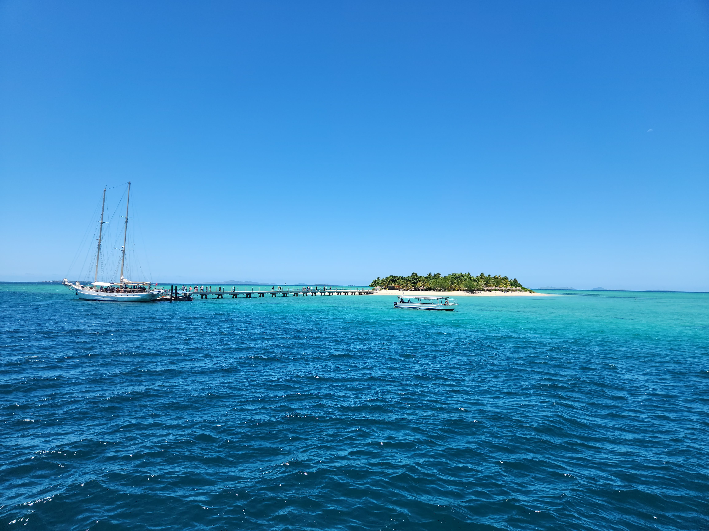

About Fiji
Fiji has a warm, sub-tropical climate with two seasons: summer (wet season) from November to April and winter (dry season) from May to October. Summer is hot and humid, with temperatures around 25-31°C, occasional rain, and colorful sunsets, while winter is cooler, with temperatures ranging from 19-28°C and less rainfall. The larger islands offer diverse weather, from lush rainforests in the east to dry forests in the west. You can enjoy swimming in warm waters year-round, visit beautiful beaches, try out new foods, and take in mesmerizing views.
My top 3 things to do in Fiji
There's a lot of things to do in Fiji, but my three favourite things to do in Hawaii is eating traditional Fijian food, Going to the beaches, and watching sunsets and the mesmerizing views the Island has to offer.
Beaches
